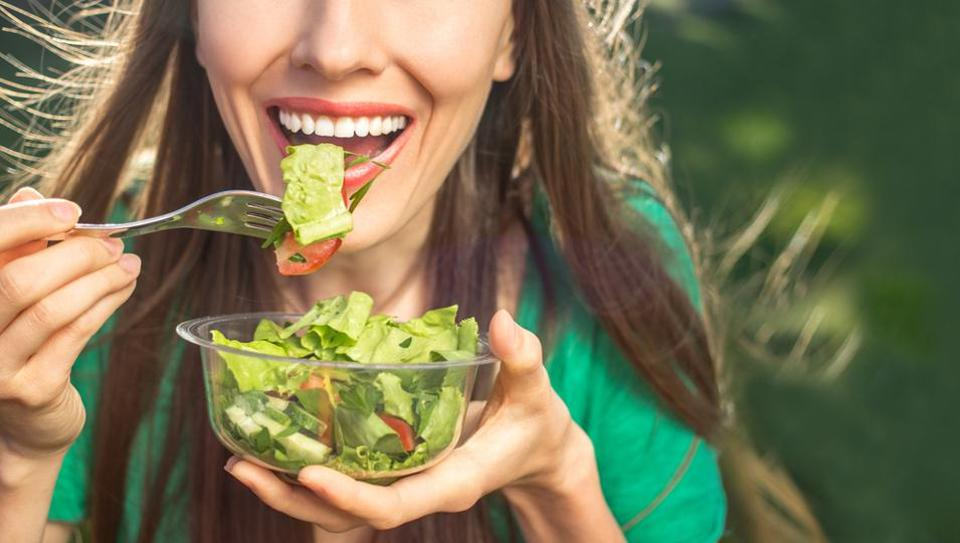
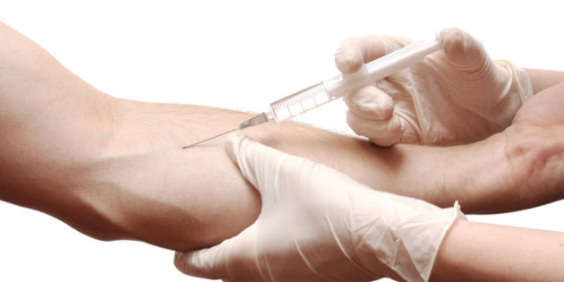
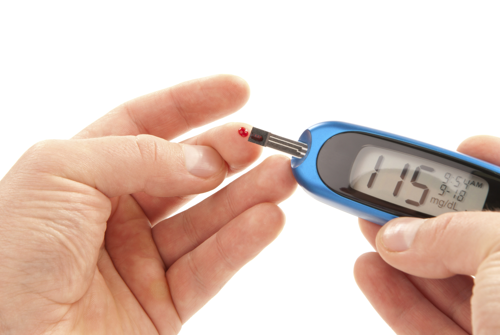
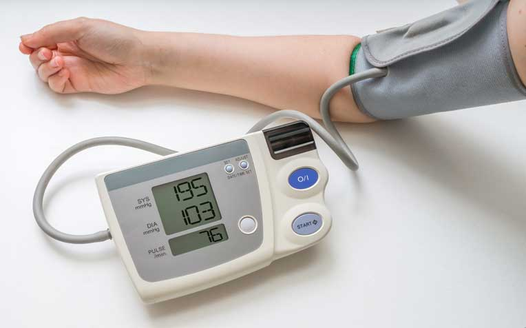
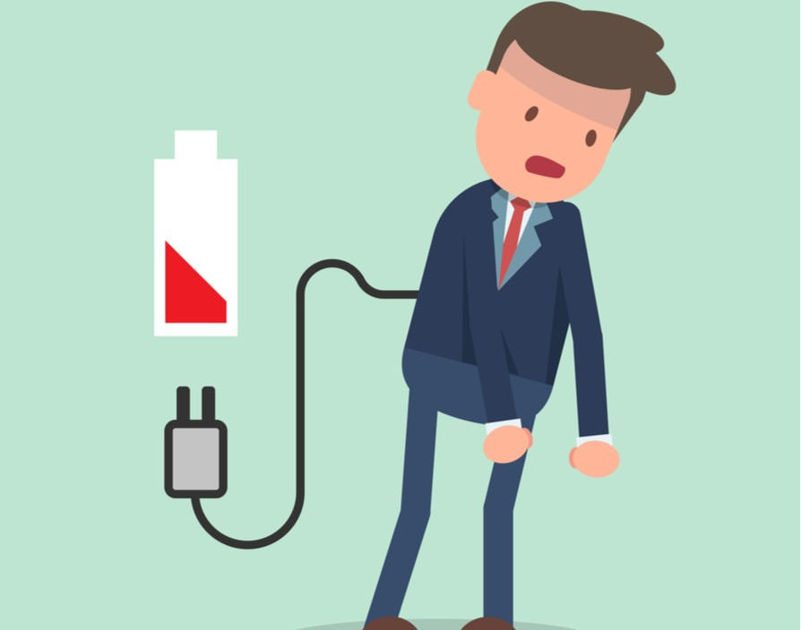

Myth :Being a vegetarian, means that the blood does not have enough iron and cannot be donated.
Fact :Vegetarians can donate blood. The iron needed is taken from body stores and once a balanced diet is maintained is replaced after donation. This usually normally takes a month or so.

Fact : The needle used for blood donations is the same size of the needle used
when you draw a vial of blood for medical tests. It’s only a small prick, even though the
needle remains in your arm for longer. If you can tolerate normal injections, you will be
able to handle a blood donation.
Myth : Giving blood hurts.
Fact : The needle used for blood donations is the same size of the needle used
when you draw a vial of blood for medical tests. It’s only a small prick, even though the
needle remains in your arm for longer. If you can tolerate normal injections, you will be
able to handle a blood donation.
There might be slight soreness and a bit of bruising at the area, but this should not last
long.
Myth : I won’t be able to continue with my exercise regime after donating blood.
Fact :While it is recommended that you don’t do strenuous exercise or lift
heavy weights directly after donating blood, your body does bounce back fairly quickly
afterwards.
If you are healthy, you will be fully regenerated after a day or two. Take it easy on the
day of your donation and drink plenty of water to stay hydrated.

Fact : If you have no other medical consequences from diabetes such as eye,
blood vessel or kidney problems and if you control your insulin levels through a healthy
diet and lifestyle, there is no reason why you can’t donate blood. The SANBS consider
diabetics "healthy" as long as their diabetes is controlled.
Myth : I can’t donate blood because I’m diabetic
Fact : If you have no other medical consequences from diabetes such as eye,
blood vessel or kidney problems and if you control your insulin levels through a healthy
diet and lifestyle, there is no reason why you can’t donate blood. The SANBS consider
diabetics "healthy" as long as their diabetes is controlled.
However, if you use insulin made from bovine secretion, you will not be eligible to donate
due to concerns about Creutzfeld-Jacob Disease (a variation of “mad cow” disease). But not
all modern insulin will prohibit you from donating blood.

Myth :High BP patients cannot be blood donors
Fact :Those with blood pressure between 180 systolic and 100 diastolic can very well donate blood. This frame might be considered high, but it does not isolate you from donating blood. Moreover, blood pressure medicines do not interfere with the process at all.
Myth :Blood donation isn't for women
Fact :Well, whatever is ever FOR women? No, seriously, how does blood have anything to do with gender? That women bleed every month anyway, so they shouldn't? The logical argument could be that women have a lower haemoglobin count than men due to their biological setup. Women naturally survive in lower haemoglobin levels. So, blood donation affects them the same way that it would affect a man. Thus, unless women are pregnant, lactating, anaemic, or suffering from some medical issue that lowers haemoglobin count -- they can donate blood.
